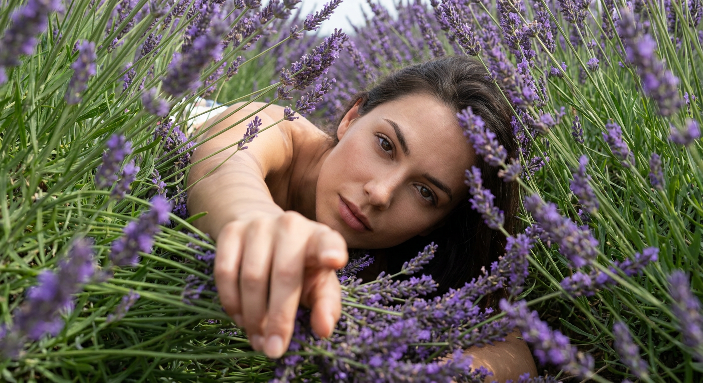
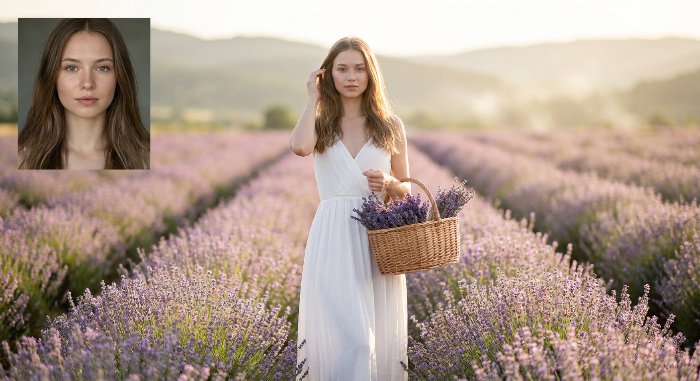
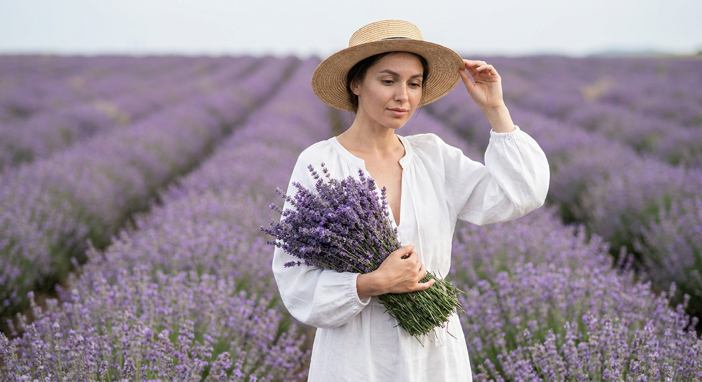
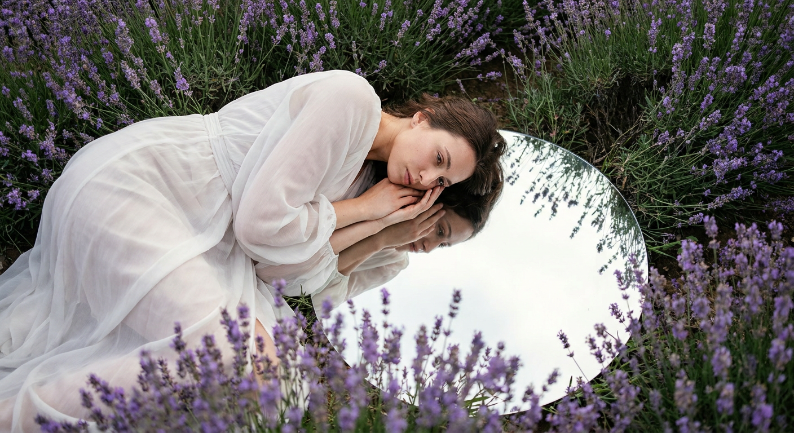
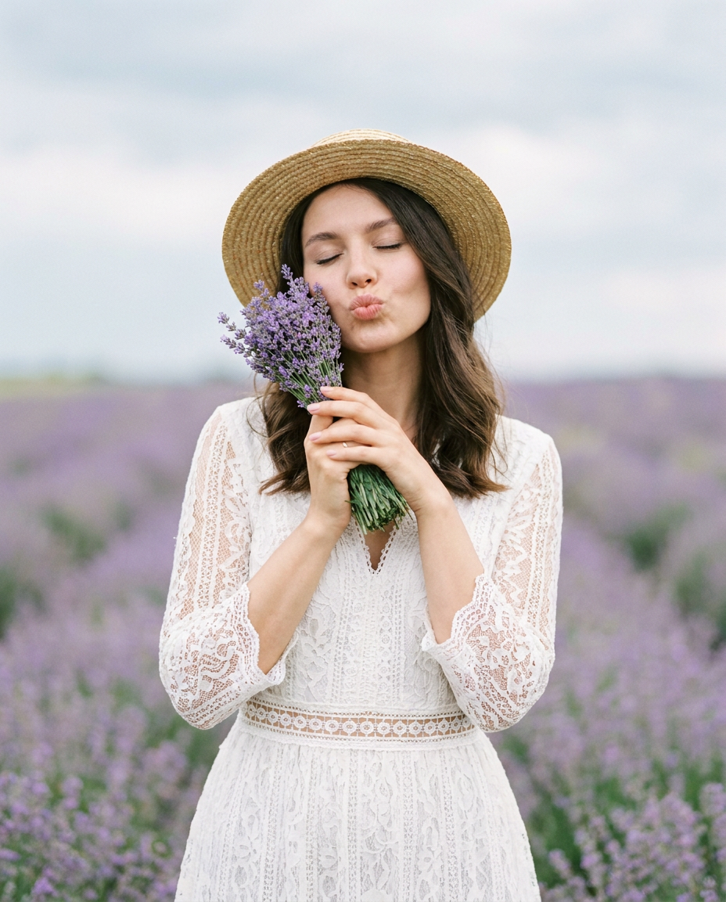
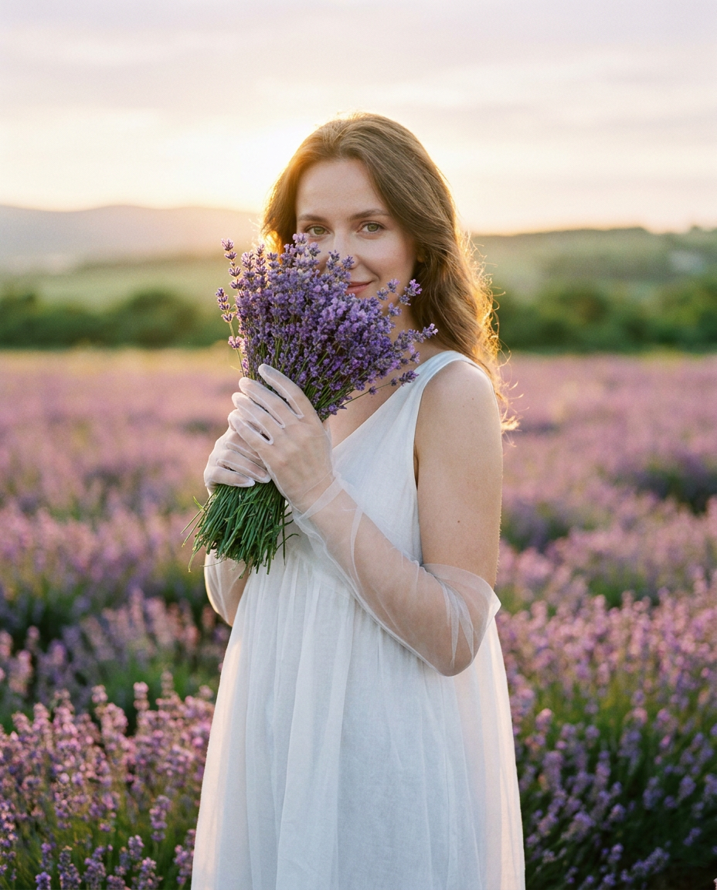
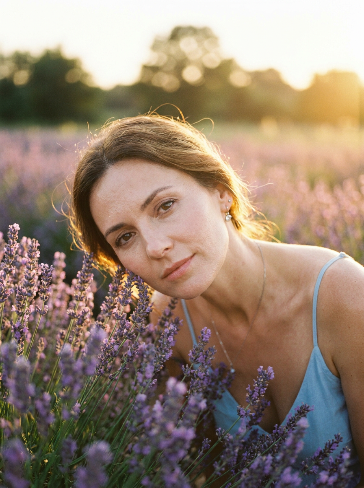
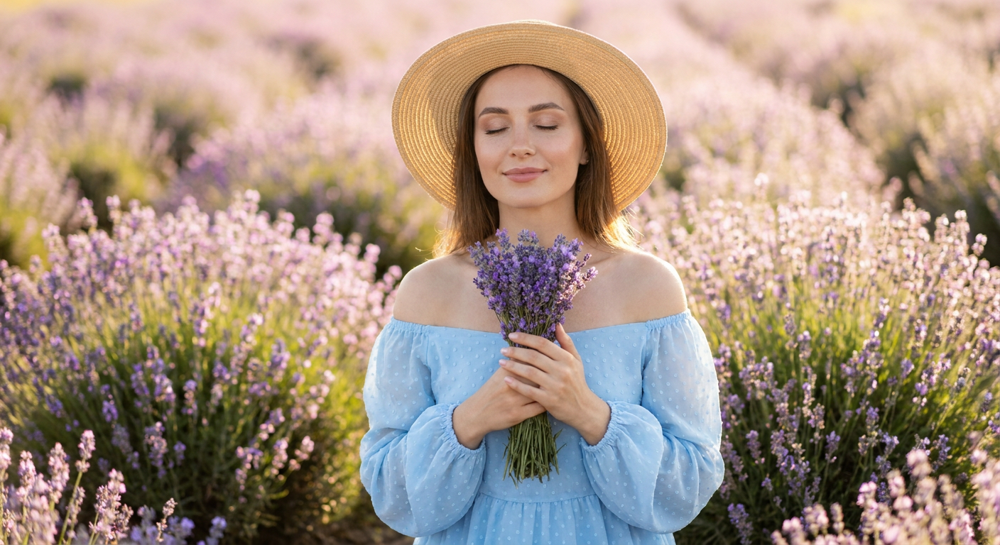
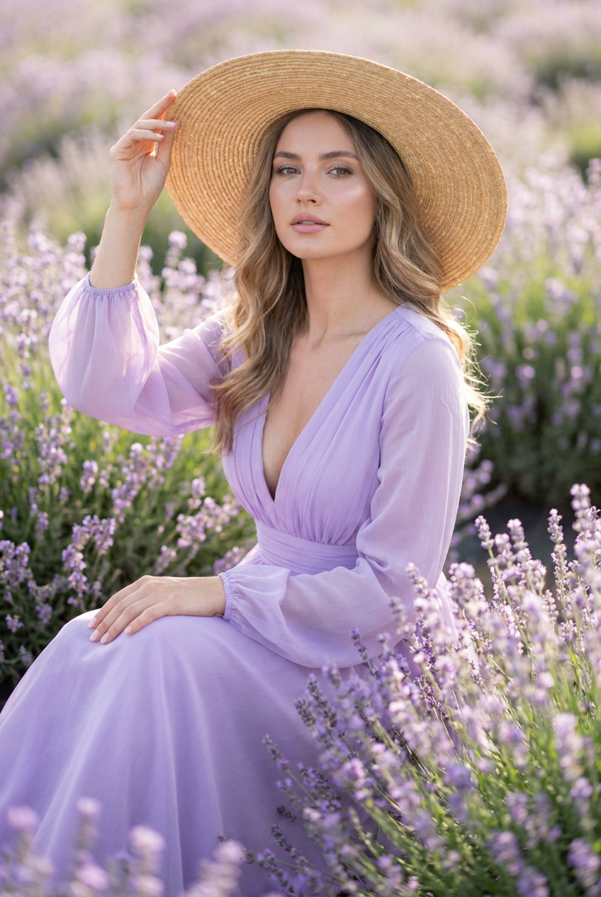
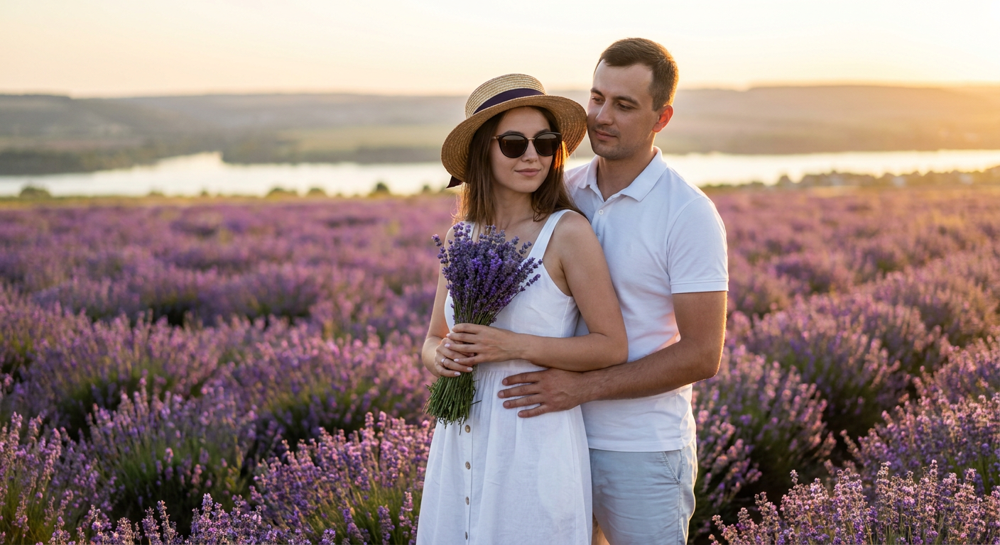

ИИ-фото с лавандой: 10 промптов для нейросети

Лавандовое поле выглядит эффектно в жизни, но собрать идеальный образ, свет и композицию для фотосессии получается не всегда. Генерация помогает быстро получить нужное настроение — от нежного портрета до журнального fashion-кадра.
В подборке — 10 промптов для съёмки среди лаванды: крупные портреты, фотографии в полный рост, кадры с букетом, зеркалом, соломенной шляпой и романтичной парой на закате.
Как сгенерировать такое фото: пошагово
Нужен снимок анфас при ровном свете, лицо в кадре целиком, без тёмных очков и головных уборов. Разрешение от 1000 пикселей по короткой стороне. Чем чётче исходник, тем точнее модель повторит черты.
Выберите сценарий ниже и нажмите «Копировать» — текст уйдёт в буфер целиком, вместе с командой сохранения внешности. Эта команда стоит первой строкой и отвечает за то, чтобы на выходе было ваше лицо, а не случайное.
Кнопка «Сгенерировать» рядом с каждым промптом открывает модель в новой вкладке. Nano Banana Pro работает с референсом лица — в отличие от моделей, которые генерируют портрет с нуля и узнаваемость теряют.
Промпт — в поле ввода, портрет — через загрузку референса. Порядок значения не имеет, но без референса команда сохранения внешности работать не будет: модели нечего сохранять.
Для сторис и ленты берите 9:16, для превью и обложек — 4:3. Первый результат редко идеален: если поза или свет ушли не туда, поправьте соответствующую часть промпта и запустите заново. Обычно хватает двух-трёх итераций.
10 промптов для генерации
1. Портрет в лавандовом тоннеле
Строго сохранить внешность по загруженному референсу: черты лица, пропорции, мимику и текстуру кожи без изменений. Фотореалистичная editorial-фотография женщины, снятая почти с уровня земли внутри густого лавандового поля. Модель находится очень низко среди кустов, словно пробирается через растения или лежит на их уровне. Фиолетовые соцветия и зелёные стебли окружают лицо со всех сторон, образуя плотную природную арку и ощущение тоннеля. Камера расположена близко к цветам, часть переднего плана мягко размыта, чтобы усилить эффект присутствия. Лицо в центре кадра полностью резкое, взгляд прямо в объектив, выражение спокойное, уверенное, с лёгкой чувственностью. Натуральная текстура кожи, мягкий дневной свет, реалистичные оттенки лаванды, малая глубина резкости, высокая детализация, журнальная композиция без кукольной ретуши.
2. Белое платье на закате

Строго сохранить внешность по загруженному референсу: черты лица, пропорции, мимику и текстуру кожи без изменений. Фотореалистичный снимок молодой женщины в полный рост, стоящей в центре ровного ряда цветущей лаванды. Линии грядок уходят вдаль и создают глубокую перспективу. На ней воздушное белое платье с хорошо заметной фактурой ткани; одной рукой она слегка касается волос, а в другой держит плетёную корзину с собранными пучками лаванды. Тёплый золотой час, мягкое естественное освещение, лёгкая дымка над холмами на заднем плане. Цветовая палитра построена на пастельных пурпурных, зелёных и кремовых оттенках. Малая глубина резкости, мягкое боке, натуральная ретушь, детализированная корзина и ткань. Камера: 50 мм, f/1.8, ISO 100, выдержка 1/200 с.
3. Букет и соломенная шляпа

Строго сохранить внешность по загруженному референсу: черты лица, пропорции, мимику и текстуру кожи без изменений. Дорогая editorial-съёмка в лавандовом поле: женщина стоит среди бесконечных ровных рядов цветущих растений, которые сходятся к горизонту и формируют ведущие линии. Она прижимает к груди и талии большой пышный букет лаванды. Одна рука поддерживает цветы, другая легко касается полей соломенной шляпы. Поза элегантная, расслабленная и немного романтичная. Лицо повернуто чуть в сторону, взгляд опущен, выражение мягкое, спокойное, задумчивое. Лёгкая летняя одежда в светлых натуральных тонах, тонкая фактура ткани, естественная посадка. Съёмка в мягком рассеянном свете, пастельная пурпурно-зелёная палитра, воздушная перспектива, умеренное боке, реалистичная кожа и деликатная журнальная цветокоррекция.
4. Зеркало среди цветов

Строго сохранить внешность по загруженному референсу: черты лица, пропорции, мимику и текстуру кожи без изменений. Фотореалистичная художественная outdoor fashion-фотография с лёгким сюрреалистичным эффектом. В густой лаванде на земле лежит большое круглое зеркало. В его поверхности отражаются чистое голубое небо и свет, поэтому композиция кажется воздушной и глубокой. Вокруг зеркала плотные кусты с ярко-фиолетовыми соцветиями и зелёными стеблями образуют естественную рамку; отдельные цветы совсем близко к объективу размыты. Рядом с зеркалом расположена женщина в светлом воздушном платье, её поза естественная и элегантная, часть фигуры направлена к зеркалу. Сохранить реалистичное отражение, правильную геометрию круга и убедительный контакт модели с землёй. Мягкий дневной свет, натуральная кожа, малая глубина резкости, высокая детализация, настроение журнальной fashion-съёмки.
5. Кокетливый букет у лица

Строго сохранить внешность по загруженному референсу: черты лица, пропорции, мимику и текстуру кожи без изменений. Вертикальный фотореалистичный outdoor fashion-портрет девушки на узкой дорожке между рядами цветущей лаванды. Она стоит по центру кадра в белом кружевном летнем платье с тонкой фактурой, лёгкой романтичной посадкой и воздушным силуэтом. Одна рука лежит на талии, вторая поднята к лицу и держит маленький букетик лаванды возле щеки или глаза. Поза уверенная, женственная и непринуждённая. Губы собраны в мягкий поцелуйный pout, глаза закрыты или слегка прикрыты, настроение игривое и кокетливое, но без гротеска. Лавандовые ряды уходят в глубину, фон растворяется в мягком боке. Летний естественный свет, пастельные фиолетовые и зелёные оттенки, натуральная ретушь, вертикальная композиция с высокой детализацией кружева и цветов.
6. Букет закрывает лицо

Строго сохранить внешность по загруженному референсу: черты лица, пропорции, мимику и текстуру кожи без изменений. Вертикальный романтичный портрет девушки в центре цветущего лавандового поля. Она держит перед лицом большой объёмный букет так, чтобы цветы частично закрывали черты, но оставляли видимыми глаза, нос и губы. Поза спокойная, нежная и естественная, взгляд можно направить в объектив или немного в сторону; выражение мечтательное, с едва заметной загадочной улыбкой. На девушке лёгкое белое платье без рукавов или с тонкими бретелями, мягкая женственная посадка и воздушная ткань. Густая лаванда окружает фигуру, отдельные соцветия находятся близко к камере и красиво размываются. Мягкий рассеянный летний свет, пастельная палитра, реалистичная кожа, аккуратная натуральная ретушь, малая глубина резкости, вертикальный кадр с детальной фактурой цветов и платья.
7. Щека касается лаванды

Строго сохранить внешность по загруженному референсу: черты лица, пропорции, мимику и текстуру кожи без изменений. Фотореалистичный средний крупный портрет девушки среди цветущей лаванды. Она слегка наклоняет голову и опирается щекой или виском на соцветия, будто мягко погружается в цветы. Поза расслабленная, интимная и воздушная, без напряжения в плечах. Вокруг лица, по бокам и на переднем плане располагаются густые стебли лаванды, часть цветов размыта, но лицо и верх груди остаются хорошо различимыми. Взгляд спокойный и мечтательный, допустима едва заметная улыбка или почти нейтральное выражение. Съёмка в мягком естественном свете, нежные пурпурные, зелёные и кремовые оттенки, малая глубина резкости, реалистичная текстура кожи, деликатная ретушь. Кадр должен передавать ощущение тишины, близости к природе и лёгкого летнего воздуха.
8. Голубое платье и тишина

Строго сохранить внешность по загруженному референсу: черты лица, пропорции, мимику и текстуру кожи без изменений. Фотореалистичный портрет девушки в густо цветущем лавандовом поле, летняя романтичная атмосфера, мягкий естественный свет и нежная пастельная цветокоррекция. Девушка держит небольшой букет лаванды обеими руками и бережно прижимает его к груди. Поза расслабленная, женственная, без постановочного напряжения. Глаза закрыты, на лице спокойствие, умиротворение и лёгкая мягкая улыбка. На ней светло-голубое воздушное платье с открытыми плечами, объёмными рукавами и деликатным узором на полупрозрачной мягкой ткани. Лавандовые кусты заполняют фон и передний план, отдельные соцветия слегка размыты. Натуральная кожа, реалистичная ткань, тонкие тени, воздушное боке, высокая детализация и ощущение тихого летнего утра.
9. Шляпа среди лаванды

Строго сохранить внешность по загруженному референсу: черты лица, пропорции, мимику и текстуру кожи без изменений. Вертикальная профессиональная outdoor fashion-фотография девушки, сидящей среди густо цветущей лаванды. Композиция спокойная, элегантная и уверенная: корпус немного развёрнут в сторону, голова слегка приподнята. Одна рука поднята и аккуратно придерживает край большой соломенной шляпы с широкими полями, вторая расслабленно опущена или лежит на ноге либо складках юбки. Взгляд направлен в камеру или чуть в сторону, выражение мягкое, естественное, без широкой улыбки, с лёгкой уверенностью. На девушке светлый романтичный летний образ, ткань одежды выглядит натурально и детально. Лаванда окружает сидящую фигуру, ближайшие цветы размыты, дальние ряды уходят в мягкий фон. Дневной естественный свет, пастельная палитра, реалистичная кожа, малая глубина резкости и аккуратная fashion-ретушь.
10. Пара на золотом закате

Строго сохранить внешность по загруженному референсу: черты лица, пропорции, мимику и текстуру кожи без изменений. Фотореалистичный портрет пары в лавандовом поле на закате, кадр по три четверти роста и широкий план с горизонтом реки и холмов на заднем плане. Женщина стоит впереди в белом летнем платье и соломенной шляпе, на ней солнечные очки, в руках букет лаванды. Мужчина находится позади, одет в белую футболку-поло и шорты, мягко обнимает её за талию. Поза романтичная, естественная, без напряжения. Вокруг насыщенные пурпурные ряды лаванды, тёплый золотой свет и объёмный контровой rim light по волосам и плечам. Мягкое боке отделяет пару от пейзажа, оттенки кожи натуральные, цветокоррекция кинематографичная, но реалистичная. Объектив 50 мм, f/1.8, малая глубина резкости, высокая детализация ткани, цветов и дальнего ландшафта.
Что важно учесть в этом стиле
Лавандовые кадры держатся на контрасте: фиолетовые соцветия лучше сочетать с белой, голубой или песочной одеждой. Для романтичного настроения подойдут мягкий свет, пастельная палитра и лёгкое боке, а для fashion-съёмки — чёткая поза, ведущие линии рядов и выразительный аксессуар.
В промпте полезно отдельно задавать крупность кадра, положение рук, направление взгляда и работу переднего плана. Если нужны узнаваемые черты, лицо лучше описывать вместе с естественной текстурой кожи и без чрезмерной ретуши. Для реалистичного результата добавьте объектив, диафрагму и характер освещения.
Идеи для вариаций
- Замените золотой час на прохладное утро с росой на соцветиях.
- Добавьте льняной костюм, винтажный велосипед или деревянный стул в поле.
- Попросите нейросеть снять образ сверху, с уровня цветов или через арку из стеблей.
- Используйте лавандовую корзину, книгу, старую камеру или букет сухоцветов как реквизит.
- Для более кинематографичного кадра добавьте туман над холмами, длинные тени и плёночное зерно.
Как собрать свой промпт
Начните с формата и сцены: вертикальный портрет, полный рост или кадр по три четверти, затем укажите место — ряд лаванды, дорожку, густые кусты или поле с горизонтом. После этого опишите одежду, позу, жесты, выражение лица и направление взгляда.
В конце задайте свет, фон, глубину резкости и технику. Например: «50 мм, f/1.8, ISO 100, золотой час, мягкое боке». Один промпт лучше посвящать одному главному действию. Если генерация путает руки или букет, упростите позу и сделайте 3–5 попыток с небольшими изменениями формулировок.
Ошибки, из-за которых кадр не получается
- Слишком много действий. Когда модель одновременно держит шляпу, букет, корзину и касается волос, нейросеть часто искажает руки.
- Не задана крупность. Без слов «крупный портрет» или «полный рост» композиция может обрезать фигуру и реквизит.
- Путаются слои изображения. Уточняйте, какие цветы находятся на переднем плане, где лицо, а что должно остаться на фоне.
- Слишком сильная ретушь. Формулировки про идеальную кожу нередко превращают лицо в пластиковое и неузнаваемое.
- Нет параметров света. Добавьте время суток, направление освещения и характер теней, иначе поле может выглядеть плоским.
Частые вопросы
Как сделать такое ИИ-фото бесплатно?
Для первых попыток подойдут Kandinsky и Шедеврум: они позволяют генерировать изображения без оплаты, но могут ограничивать число запросов, качество или точность работы с референсом. Krea AI и Arena.ai удобны для экспериментов и сравнения вариантов, однако бесплатный доступ тоже зависит от текущих лимитов. Ни один сервис не гарантирует идеальное сходство с загруженным лицом: иногда понадобится несколько генераций и ручной отбор.
Как сохранить сходство с человеком на фото?
Используйте качественный референс с хорошо освещённым лицом без очков и сильного поворота головы. В промпте укажите, что нужно сохранить форму глаз, носа, губ, скул, линию подбородка и естественную текстуру кожи. Не перегружайте описание макияжем и сильной стилизацией.
Как получить реалистичную лаванду?
Опишите отдельные соцветия, зелёные стебли, плотность рядов и расстояние до камеры. Добавьте мягкий естественный свет, размытый передний план и конкретный объектив. Слова «фотореалистично» будет недостаточно без деталей фактуры и композиции.
Что делать, если нейросеть искажает руки или лицо?
Упростите позу, оставьте один аксессуар и явно укажите, какая рука что держит. Для лица попробуйте более спокойное выражение и фронтальный ракурс. Сгенерируйте несколько вариантов, а затем доработайте лучший через режим исправления отдельных областей.